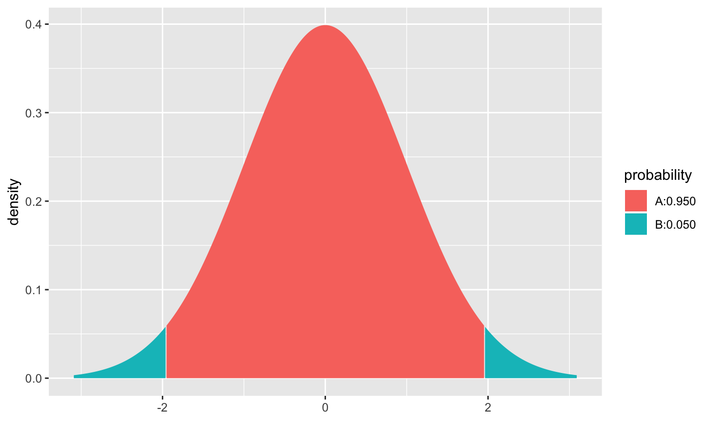
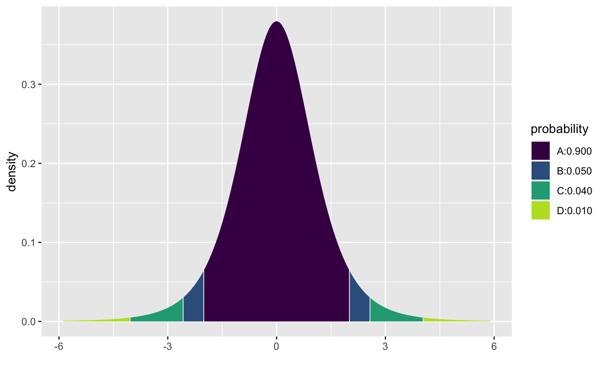
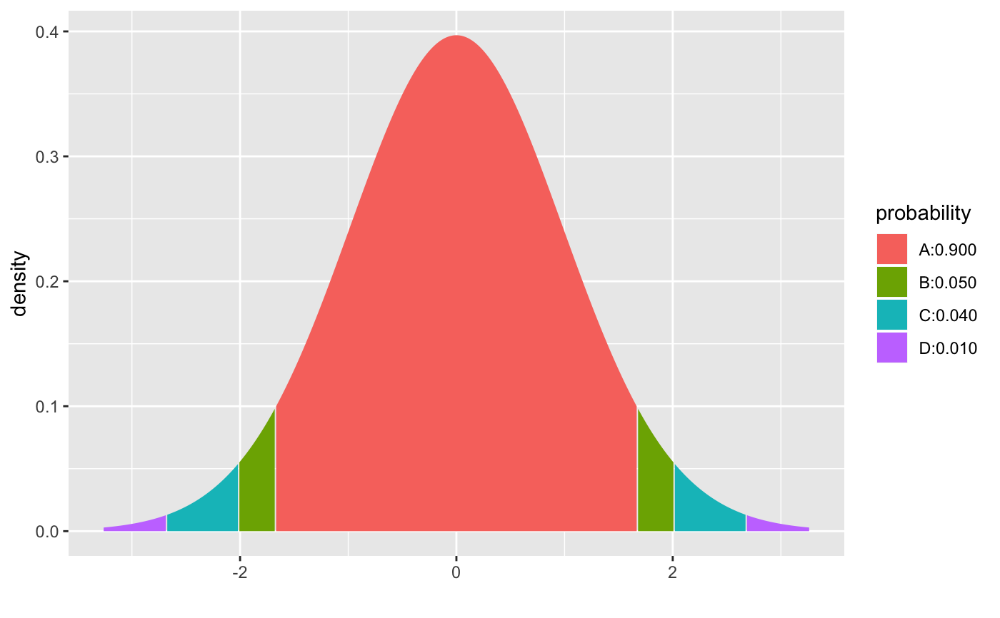
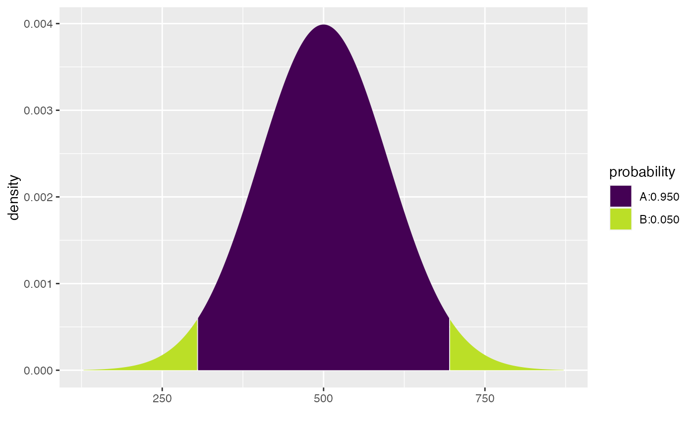
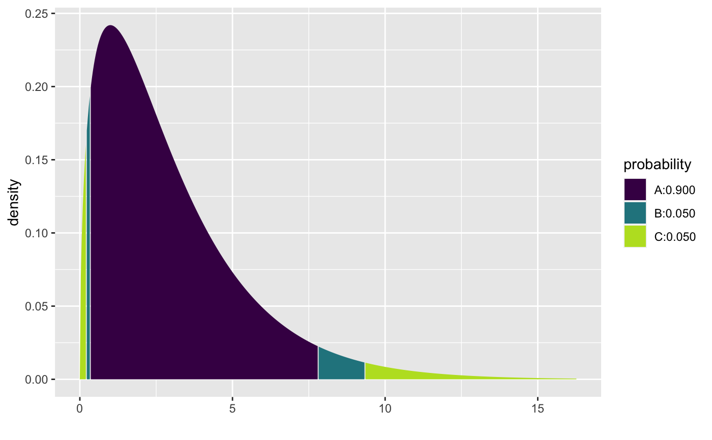
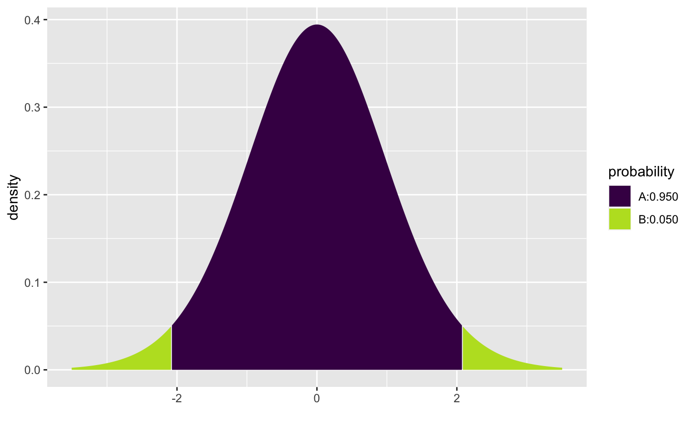
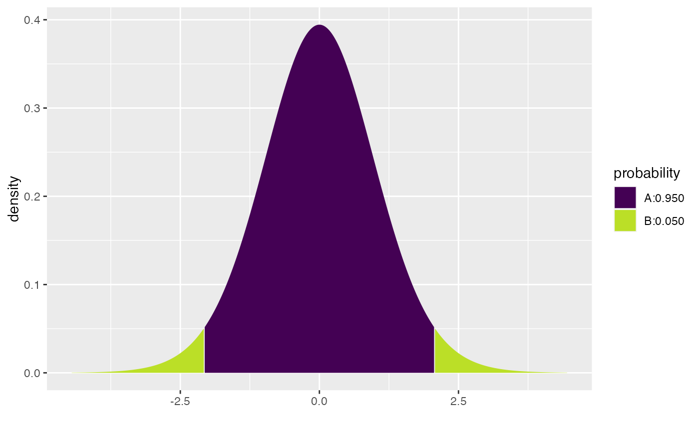

This function determines the critical values for isolating a central portion of a distribution with a specified probability. This is designed to work especially well for symmetric distributions, but it can be used with any distribution.
cdist(
dist = "norm",
p,
plot = TRUE,
verbose = FALSE,
invisible = FALSE,
digits = 3L,
xlim = NULL,
ylim = NULL,
resolution = 500L,
return = c("values", "plot"),
pattern = c("rings", "stripes"),
...,
refinements = list()
)
xcgamma(
p,
shape,
rate = 1,
scale = 1/rate,
lower.tail = TRUE,
log.p = FALSE,
...
)
xct(p, df, ncp, lower.tail = TRUE, log.p = FALSE, ...)
xcchisq(p, df, ncp = 0, lower.tail = TRUE, log.p = FALSE, ...)
xcf(p, df1, df2, lower.tail = TRUE, log.p = FALSE, ...)
xcbinom(p, size, prob, lower.tail = TRUE, log.p = FALSE, ...)
xcpois(p, lambda, lower.tail = TRUE, log.p = FALSE, ...)
xcgeom(p, prob, lower.tail = TRUE, log.p = FALSE, ...)
xcnbinom(p, size, prob, mu, lower.tail = TRUE, log.p = FALSE, ...)
xcbeta(p, shape1, shape2, ncp = 0, lower.tail = TRUE, log.p = FALSE, ...)Arguments
- dist
a character string naming a distribution family (e.g., "norm"). This will work for any family for which the usual d/p/q functions exist.
- p
the proportion to be in the central region, with equal proportions in either "tail".
- plot
a logical indicating whether a plot should be created
- verbose
a logical indicating whether a more verbose output value should be returned.
- invisible
a logical
- digits
the number of digits desired
- xlim
x limits. By default, these are chosen to show the central 99.8\ of the distribution.
- ylim
y limits
- resolution
number of points used for detecting discreteness and generating plots. The default value of 5000 should work well except for discrete distributions that have many distinct values, especially if these values are not evenly spaced.
- return
If
"plot", return a plot. If"values", return a vector of numerical values.- pattern
One of
"stripes"or"rings". In the latter case, pairs of regions (from the outside to the inside) are grouped together for coloring and probability calculation.- ...
additional arguments passed to the distribution functions. Typically these specify the parameters of the particular distribution desired. See the examples.
- refinements
A list of refinements to the plot. See
ggformula::gf_refine().- shape, scale
shape and scale parameters. Must be positive,
scalestrictly.- rate
an alternative way to specify the scale.
- lower.tail
logical; if TRUE (default), probabilities are \(P[X \le x]\), otherwise, \(P[X > x]\).
- log.p
A logical indicating whether probabilities should be returned on the log scale.
- df
degrees of freedom (\(> 0\), maybe non-integer).
df = Infis allowed.- ncp
non-centrality parameter \(\delta\); currently except for
rt(), only forabs(ncp) <= 37.62. If omitted, use the central t distribution.- df1, df2
degrees of freedom.
Infis allowed.- size
number of trials (zero or more).
- prob
probability of success on each trial.
- lambda
vector of (non-negative) means.
- mu
alternative parametrization via mean: see ‘Details’.
- shape1, shape2
non-negative parameters of the Beta distribution.
Value
a pair of numbers indicating the upper and lower bounds, unless verbose is
TRUE, in which case a 1-row data frame is returned containing these bounds,
the central probability, the tail probabilities, and the name of the distribution.
Note
This function is still experimental and changes the input or output formats are possible in future versions of the package.
Examples
cdist( "norm", .95)

#> [1] -1.959964 1.959964
cdist( "t", c(.90, .95, .99), df=5)

#> [1] -4.032143 -2.570582 -2.015048 2.015048 2.570582 4.032143
cdist( "t", c(.90, .95, .99), df=50)

#> [1] -2.677793 -2.008559 -1.675905 1.675905 2.008559 2.677793
# plotting doesn't work well when the parameters are not constant
cdist( "t", .95, df=c(3,5,10,20), plot = FALSE)
#> [,1] [,2]
#> [1,] -3.182446 3.182446
#> [2,] -2.570582 2.570582
#> [3,] -2.228139 2.228139
#> [4,] -2.085963 2.085963
cdist( "norm", .95, mean=500, sd=100 )

#> [1] 304.0036 695.9964
cdist( "chisq", c(.90, .95), df=3 )

#> [1] 0.2157953 0.3518463 7.8147279 9.3484036
# CI
x <- rnorm(23, mean = 10, sd = 2)
cdist("t", p = 0.95, df=22)

#> [1] -2.073873 2.073873
mean(x) + cdist("t", p = 0.95, df=22) * sd(x) / sqrt(23)

#> [1] 9.341198 10.850446
confint(t.test(x))
#> mean of x lower upper level
#> 1 10.09582 9.341198 10.85045 0.95
cdist("t", p = 0.95, df=22, verbose = TRUE)
#> Verbose output not yet implemented.
 #> [1] -2.073873 2.073873
#> [1] -2.073873 2.073873